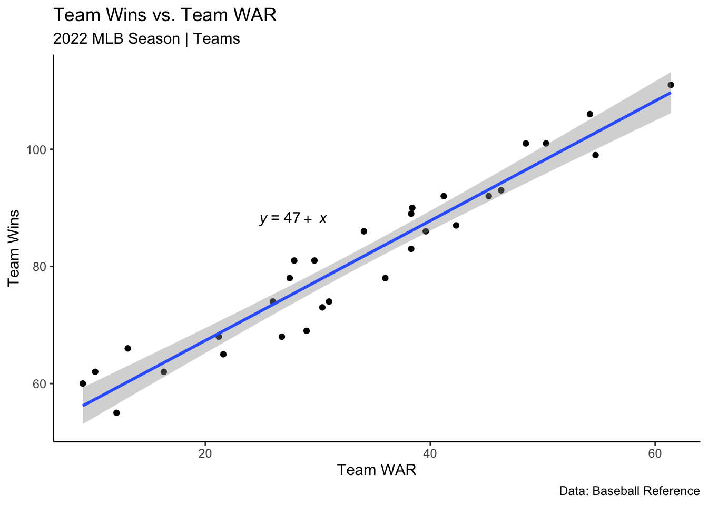
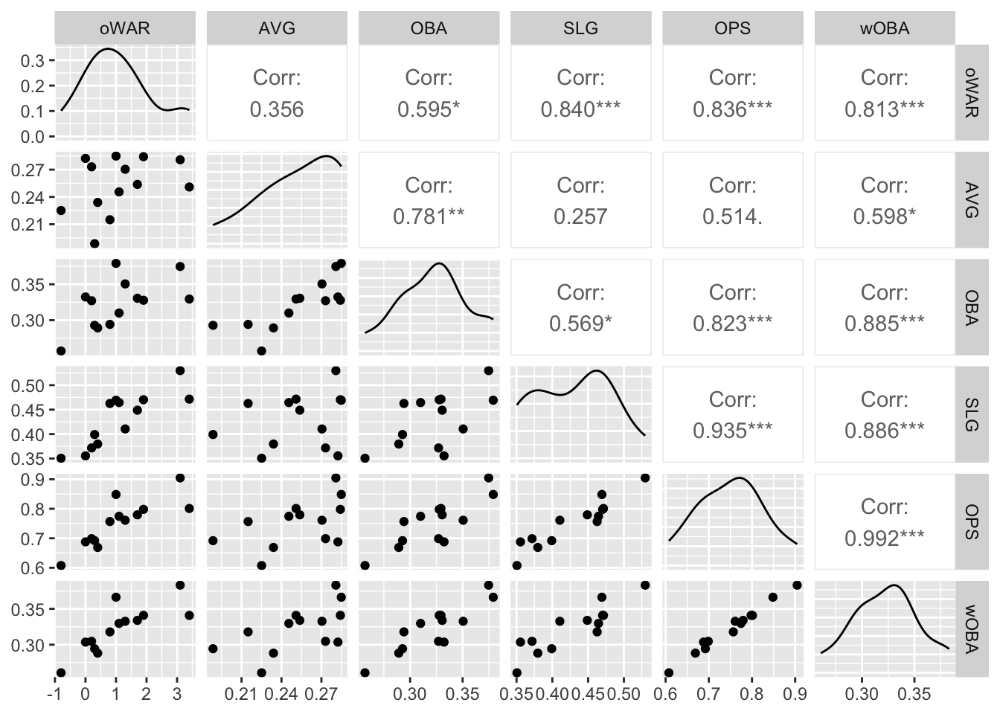

- About
- 1 Exploratory Data Analysis
- 2 Probability
- Chapter Preview
- 2.1 Definitions
- 2.2 Set Theory
- 2.3 Axioms, Properties, and Laws
- 2.4 Combinatorics
- 2.5 Odds and Gambling
- 2.6 Random Variables
- 2.7 Common Random Variables
- 2.8 Extra Stuff
- 2.8.1 Sets and Conditional Probability
- 2.8.2 Binomials and Multinomials
- 2.8.3 Expectation - Baseball
- 2.8.4 Basketball Scenario
- 2.8.5 Multiple Probability Distributions - Basketball
- 2.8.6 Law of Total Probability - Baseball
- 2.8.7 Multinomial Distribution - Baseball
- 2.8.8 Bayes - injured baseball player
- 3 Monte Carlo Simulation
- 4 Statistical Inference
- 5 Correlation
- 6 Linear Regression
- References
1.4 Baseball
Baseball rules YouTube video: https://www.youtube.com/watch?v=skOsApsF0jQ&t=63s
1.4.1 Basic Hitting Statistics
Plate Appearances (PA): number of completed batting appearances
At-Bats (AB): Batting appearances, not including bases on balls, hit by pitch, sacrifices, interference, or obstruction
Hits (H): Times reached base because of a batted, fair ball without error by the defense
Singles (1B): Hits on which the batter reached first base safely without the contribution of a fielding error
Doubles (2B): Hits on which the batter reached second base safely without the contribution of a fielding error
Triples (3B): Hits on which the batter reached third base safely without the contribution of a fielding error
Home Runs (HR): Hits on which the batter successfully touched all four bases, without the contribution of a fielding error
Total Bases (TB): One for each single, two for each double, three for each triple, and four for each home run
Hit by Pitch (HBP): Times touched by a pitch and awarded first base as a result
Sacrifice Fly (SF): Number of fly ball outs which allow another runner to advance on the basepaths or score
Base on Balls (BB or Walk): Times receiving four balls and advancing to first base
Intentional Base on Balls (IBB or Intentional Walk): Times receiving four balls intentionally and advancing to first base
Strikeout (K): Number of times that strike three is taken or swung at and missed, or bunted foul
Runs (R): Times reached home base legally and safely
Runs Batted In (RBI): Number of runners who scored due to a batters’s action, except when batter grounded into double play or reached on an error
Batting Average (AVG or BA): Hits divided by at bats
On Base Percentage/Average (OBP or OBA): Times reached base (H + BB + HBP) divided by at bats plus walks plus hit by pitch plus sacrifice flies (AB + BB + HBP + SF)
Slugging Percentage/Average (SLG): Total bases divided by at-bats
On-base Plus Slugging (OPS): On-base percentage plus slugging average
1.4.2 Basic Pitching Statistics
Innings Pitched (IP): Number of outs recorded while pitching divided by three
Strikeout (K): Number of batters who received strike three
Base on Balls (BB or Walk): Times pitching four balls, allowing the batter-runner to advance to first base
Hits Allowed (H): Total hits allowed
Wins (W): Number of games where pitcher was pitching while his team took the lead and went on to win
Losses (L): Number of games where pitcher was pitching while the opposing team took the lead, never lost the lead, and went on to win
Earned Runs (ER): Number of runs that did not occur as a result of errors or passed balls
Earned Run Average (ERA): Earned runs times innings in a game (usually nine) divided by innings pitched
Walks and Hits Per Inning Pitched (WHIP): Walks plus hits allowed divided by innings pitched
1.4.3 Advanced Baseball Hitting Statistics
Isolated Power (ISO): Slugging percentage minus Batting average
On-base Plus Slugging Plus (OPS+): OPS normalized for park effects with 100 being league average
Weighted On-Base Average (wOBA): Hitting rate statistic that attempts to credit the hitter for the value of each outcome. The following formula can be updated each year based on the scoring environment. The following formula was updated for the 2021 season.
\[wOBA = \frac{0.69 \cdot (BB - IBB) + 0.719 \cdot HBP + 0.87 \cdot 1B + 1.217 \cdot 2B + 1.529 \cdot 3B + 1.94 \cdot HR}{AB + BB - IBB + SF + HBP}\]
- Expected Weighted On-Base Average (xwOBA): Hitting rate statistic that attempts to credit the hitter for the value of each expected outcome based on Statcast data.
1.4.4 Advanced Baseball Pitching Statistics
- Fielding Independent Pitching (FIP): Statistic that estimates a pitcher’s run prevention independent of the performance of the defense
\[FIP = \frac{13 \cdot HR + 3 \cdot (BB + HBP) - 2 \cdot K}{IP} + FIP_{constant}\]
The \(FIP_{constant}\) is generally around 3.10 and is put FIP on a scale similar to ERA.
- Expected Fielding Independent Pitching (xFIP): Statistic that estimates a pitcher’s expected run prevention independent of the performance of the defense
\[xFIP = \frac{13 \cdot (Fly Balls \cdot LgHR/FB\%)+3 \cdot (BB + HBP) - 2 \cdot K}{IP} + FIP_{constant}\]
1.4.5 Wins Above Replacement
- Wins Above Replacement (WAR): Estimated number of wins that a player has outperformed a replacement player by with the same playing time. This is one of the most crucial statistics in Sabermetrics.
More about WAR from Fangraphs: https://library.fangraphs.com/misc/war/
References:
https://www.baseball-reference.com/bullpen/Baseball_statistics
https://blogs.fangraphs.com/glossary/
https://library.fangraphs.com/fangraphs-library-glossary/
1.4.6 Calculating Advanced Hitting Statistics
Example 1.10 Using the Colorado Rockies 2021 individual hitting statistics, calculate the AVG, OBA, SLG, OPS, ISO, wOBA.
# load data file and look at the header
rox21 <- read_csv("data/rockies_hitting2021.csv")
rox21 %>% slice_head(n=5) %>% kt()| Name | PA | AB | R | H | 2B | 3B | HR | RBI | BB | IBB | SO | HBP | SF | oWAR |
|---|---|---|---|---|---|---|---|---|---|---|---|---|---|---|
| Elias Diaz | 371 | 338 | 52 | 83 | 18 | 1 | 18 | 44 | 30 | 1 | 60 | 2 | 1 | 1.1 |
| C.J. Cron | 547 | 470 | 70 | 132 | 31 | 1 | 28 | 92 | 60 | 3 | 117 | 13 | 4 | 3.1 |
| Brendan Rodgers | 415 | 387 | 49 | 110 | 21 | 3 | 15 | 51 | 19 | 0 | 84 | 7 | 2 | 1.9 |
| Trevor Story | 595 | 526 | 88 | 132 | 34 | 5 | 24 | 75 | 53 | 2 | 139 | 11 | 5 | 3.4 |
| Ryan McMahon* | 596 | 528 | 80 | 134 | 32 | 1 | 23 | 86 | 59 | 2 | 147 | 4 | 5 | 1.7 |
# Create new variables using the mutate function
rox21 <- rox21 %>%
mutate(AVG = H/AB,3) %>%
mutate(OBA = (H + BB + HBP)/(AB + BB + HBP + SF)) %>%
mutate(SLG = ((H-`2B`-`3B`-HR) + 2*`2B` + 3*`3B` + 4*HR)/AB) %>%
mutate(OPS = SLG + OBA) %>%
mutate(wOBA = (0.692 * (BB - IBB) + 0.722 * HBP + 0.879 * (H-`2B`-`3B`-HR) + 1.242 * `2B` + 1.568 * `3B` + 2.007 * HR)/(AB + BB - IBB + SF + HBP)) %>%
mutate(ISO = SLG-AVG)
rox21 %>% slice_head(n=5) %>% select(Name,PA,AVG,OBA,SLG,OPS,wOBA,ISO) %>% kt()| Name | PA | AVG | OBA | SLG | OPS | wOBA | ISO |
|---|---|---|---|---|---|---|---|
| Elias Diaz | 371 | 0.246 | 0.310 | 0.464 | 0.774 | 0.330 | 0.219 |
| C.J. Cron | 547 | 0.281 | 0.375 | 0.530 | 0.905 | 0.383 | 0.249 |
| Brendan Rodgers | 415 | 0.284 | 0.328 | 0.470 | 0.798 | 0.341 | 0.186 |
| Trevor Story | 595 | 0.251 | 0.329 | 0.471 | 0.801 | 0.341 | 0.221 |
| Ryan McMahon* | 596 | 0.254 | 0.331 | 0.449 | 0.779 | 0.334 | 0.195 |
Example 1.11 oWAR is Baseball Reference’s offensive WAR statistic. Note that Baseball Reference and Fangraphs use different formulas when calculating WAR though their results are typically similar. For Rockies players with at least 100 at-bats in 2021, what hitting statistics are most and least correlated to oWAR?
# Let's remove players with less than 100 ABs
rox21_100 <- rox21 %>% filter(AB >= 100)
# GGally package has a nice pairs plotting function
library("GGally")
# Standard hitting statistics
rox21_100 %>% select(oWAR,H,`2B`,`3B`,HR,R,RBI) %>% ggpairs() +
theme(axis.text.x = element_text(angle = 90, hjust = 1))
# Rate statistics
rox21_100 %>% select(oWAR,AVG,OBA,SLG,OPS,wOBA) %>% ggpairs()
1.4.7 Evaluating Advanced Pitching Statistics
Earned run average (ERA) has been traditionally used to evaluate a pitcher, however, it has some flaws. First of all, it is highly dependent on the fielders playing behind the pitcher. If a pitcher’s shortstop has poor range, he won’t convert as many groundballs into outs as a shortstop with good range. ERA is also a noisy measurement in that can be affected easily by random luck.
To overcome some of the downsides of ERA, FIP and xFIP were developed to help reduce the variance (noise) of the measurement and to remove factors, like defense, that are not a function of the pitcher’s ability.
Let’s look at the twenty starting pitchers that had the most innings pitched in MLB for the total of the 2020 and 2021 seasons. We want to examine the year-to-year correlation between ERA, FIP, and xFIP.
pitchers2021 <- read_csv("data/MLBpitchers20-21.csv")
pitchers2021 %>% slice_head(n=5) %>% kt()| Player | ERA20 | FIP20 | xFIP20 | ERA21 | FIP21 | xFIP21 |
|---|---|---|---|---|---|---|
| Zack Wheeler | 2.92 | 3.22 | 3.76 | 2.78 | 2.59 | 2.84 |
| Adam Wainwright | 3.15 | 4.11 | 4.23 | 3.05 | 3.66 | 3.87 |
| Kyle Hendricks | 2.88 | 3.55 | 3.78 | 0.77 | 4.89 | 4.61 |
| German Marquez | 3.75 | 3.28 | 3.83 | 4.40 | 3.86 | 3.64 |
| Luis Castillo | 3.21 | 2.65 | 2.82 | 3.98 | 3.75 | 3.63 |
Let’s look at the correlations between these variables, paying close attention to what variables are most correlated with ERA20, a pitcher’s ERA in 2020.
pitchers2021 %>% select(-Player) %>% ggpairs(title="Correlation plot of pitching statistics, MLB 2020-2021")
This is a small dataset that only contains twenty pitchers (samples), but you will notice that ERA20 is more highly correlated with FIP21 and xFIP21 than ERA21. In other words, FIP and xFIP are likely better predictors of ERA success in the future rather than ERA success in the past.